Central library
Declare once.
Run anywhere.
Your skills and MCP servers live in one place — ~/.agentstack/lib.
Each project is just a short file of names. agentstack renders the real
config for every CLI, with secrets resolved per machine and never committed.
sources the library each project
local dirs ───┐
git skills ───┼──▶ ~/.agentstack/lib ◀──── lib add · consolidate
catalog ──────┘ ├─ library.toml
├─ skills/sql-review/
└─ servers/kibana.toml
# a project selects by NAME — nothing copied:
[profiles.backend]
servers = ["kibana"]
skills = ["sql-review"]
# use --write renders the views the CLIs actually read:
.mcp.json · .claude/skills/ · ~/.codex/config.tomlThree ownership rules explain this whole page — and the digest lock makes the same names resolve to the same content on every machine, or fail loudly.
Mental model
Three ownership rules
- agentstack owns definitions
- Skills and MCP server definitions live once under
~/.agentstack/lib, indexed inlibrary.toml. - projects own selection
- A project profile names what it needs. It never copies the skill or
server definition — an inline
[servers.*]/[skills.*]table, when present, deliberately wins over the library. - providers receive views
- Provider folders get symlinks or generated config entries only.
agentstack never owns
~/.claude,~/.codex, or any provider folder wholesale.
Choose your path
Start from where you are
You don't have to migrate everything at once.
| Starting point | What to do |
|---|---|
Existing project with inline [servers.*] / [skills.*] |
Keep it working. Run agentstack doctor, then centralize one capability at a time. |
| Skills scattered across provider folders | agentstack consolidate — preview, then --write. Skills move into the library; originals become symlinks. |
| New project | Add capabilities to the library first; the project manifest holds names only. |
| Many repos, no per-repo files | agentstack gateway connect --all --write once,
then review + agentstack trust . per repo and open the
smallest profile lease. See the recommended
composition. |
| Team or second machine | lock, doctor, and explain verify that the same names resolve to the same digests — or fail loudly. The gateway enforces the pins at serve time: a library definition that drifted from its lock is refused, not silently served. |
Quick start
Library entry → name reference → running CLI
$ agentstack lib add-server kibana --file kibana.toml --write
$ agentstack lib add sql-review --path ./sql-review --write
✓ copied ./sql-review → ~/.agentstack/lib/skills/sql-review
the library copy is now canonical — edits to the source have no effect
# the whole project manifest:
$ cat .agentstack/agentstack.toml
version = 1
[profiles.central]
servers = ["kibana"]
skills = ["sql-review"]
[targets]
default = ["claude-code"]
$ agentstack use central --write # render views + pin digests
$ agentstack lock # or: pin WITHOUT rendering anything
$ agentstack explain kibana # origin, provenance, lock, secrets
agentstack lock is the clean-at-rest companion: it resolves
every profile's name refs and pins them in agentstack.lock
without materializing a single file. The lock is part of the trust
digest, so re-pinning re-gates the repo — expect to re-run
agentstack trust . after locking.
Existing projects
Centralize one capability at a time
before — repo-local
[servers.kibana]
type = "http"
url = "https://kibana.example.com/mcp"
[servers.kibana.headers]
Authorization = "Bearer ${KIBANA_TOKEN}"
[skills.sql-review]
path = "./skills/sql-review"
[profiles.backend]
servers = ["kibana"]
skills = ["sql-review"]after — central names
[profiles.backend]
servers = ["kibana"]
skills = ["sql-review"]The profile lines don't change — the definitions just moved home.
Migrate a skill with lib add <name> --path … --write,
a server with lib add-server <name> --from-manifest --write,
then delete the inline table.
[servers.kibana], that local definition wins. Remove the
inline table only when you want the central copy used.
Commands
The library toolbox
| Command | What it does |
|---|---|
lib add <name> --path|--git | Copy a skill into the library (--replace to update). From a git repo, --subpath <dir> (or --git <url>#<dir>) installs a skill living in a subdirectory — marketplace/monorepo layouts. Content-scanned before it lands; warns on temp-dir sources and skills over ~10 MiB. |
lib add-server <name> --file|--from-manifest | Store a reusable server definition — ${REF}s intact. |
lib sync | Version the whole library as a git repo across machines (--init --remote to set up or clone, then commit + pull + push). The store cache stays local; a fail-closed gate blocks a literal secret in any server field — or in the outgoing commits — from travelling. |
lib list / lib remove | See or drop entries; provenance and checksums included. |
search / add from <id> | Find shipped skills + registry servers and install them; the bundled catalog ships run-codex, sync-library, analyze-usage, route-by-cost, using-agentstack, and more. |
consolidate | Sweep skills from every CLI's folder into the library, symlinking originals back. Preview first. |
lib migrate | Copy a legacy ~/.agentstack/skills/ home in — copy-first, reversible. |
lock [--profile <p>] | Pin every profile's name refs in the lockfile without rendering configs or materializing skills. |
explain <name> / doctor | Provenance, lock status, drift — with the exact fix command. |
audit --calls / optimize | Evidence from the gateway call log; optimize --write applies only the provably-safe class. |
Secrets & locking
Definitions, never values
safe central definition
[headers]
Authorization = "Bearer ${KIBANA_TOKEN}"At render or gateway time the local resolver turns
${KIBANA_TOKEN} into that machine's value — env,
varlock, OS keychain, or .env.
never in the library
[headers]
Authorization = "Bearer real-token-value"lib add-server warns on literal secrets, and lib sync
blocks a push that would carry one — in any field (headers, env, url,
args), in a definition it can't parse (fail closed), or buried in an
outgoing commit the working tree no longer shows. Skill content is
scanned on every lib add before the copy becomes
canonical — hidden Unicode blocks, injection heuristics warn;
install/audit re-scan everything
materialized.
| Item | Locked | Not locked |
|---|---|---|
| Skill | Content checksum + source locator | Generated provider copies |
| MCP server | Definition checksum with ${REF}s | Resolved secret values, per-CLI render shape |
Field guide
Every file you might encounter
- Clean central project
An
agentstack.tomlthat referenceskibanaandsql-reviewby name — and nothing else. source of truth - Central skill
lib/skills/sql-review/SKILL.mdis the real managed copy; provider folders receive symlinks or views. lib add · consolidate - Central MCP server
lib/servers/kibana.tomlholds the reusable definition with${REF}placeholders. lib add-server - Inline override
A project's own
[servers.kibana]wins over the library — intentional, for repo-specific config. supported - Local skill folder
skills/sql-review/with an inline[skills.sql-review].pathstill works; migrate whenever. supported - Project-scoped MCP file
.mcp.jsonappears because some CLIs read project-local views. Generated — not the source of truth. gitignored - Project skill view
.claude/skills/appears after activation so providers can read selected skills; the managed.gitignoreblock keeps it out of git. gitignored - Provider folder
~/.claude,~/.codex,~/.pihold private provider state; only known managed surfaces are ever touched. boundary - Lock drift
Editing a central definition changes its digest —
doctorandexplainshow the drift,install --lockedfails loudly in CI. reproducible
Provider views
What the CLIs actually read
~/.claude.json after use --write
{
"mcpServers": {
"kibana": {
"type": "http",
"url": "https://kibana.example.com/mcp",
"headers": {
"Authorization": "Bearer local-secret"
}
}
}
}why that's fine
- The provider view is generated output, backed up before every mutation.
- Only agentstack-owned entries are changed or pruned — hand-added ones are guarded, and drift hints offer
adoptbeforeapply --write. - The resolved secret lives only in the machine-local view; the lock never contains it.
- The library remains the single source of truth.
Prove it
The runnable sandbox
Every flow on this page is verified by a sandboxed demo that never touches your real provider folders:
cd examples/sandbox
./demo-central-library.sh # the central-library architecture
./demo-closed-loop.sh # pack install → apply → firewall → receipts → upgrade
Status
Implemented and next
Current implementation status — the releases page is the source of truth for shipped versions.
- Central skills + server definitions
Name resolution with inline override; digest locks; doctor drift; explain provenance; the full
libtoolbox. - Lock-only pinning
agentstack lockpins profile refs without rendering — clean-at-rest repos never need the activate/deactivate dance. - Zero-files bridge
connectonce per harness; trusted repos proxy their stack at session start — firewall, audit log, and skills over MCP included. Theusing-agentstackmanual is always loadable, even untrusted. - Machine-level instructions
init --global+ a user layer that merges personal instruction fragments beneath every project — global scope only, never a repo's committed files. - Cross-machine library sync
lib syncversions~/.agentstack/libas a git repo, so one machine's library reaches every other — store cache stays local, and a fail-closed gate keeps literal secrets out of every server field and out of the pushed history. Pulled skills pass the supply-chain scan, incrementally: only what the pull changed is re-scanned. - Library-backed hooks and instruction fragments
Name-refs for
lib/hooks/and shared instruction sets, riding the same resolve/lock pipeline. - SBOM export
A software bill of materials generated from the lockfile.
- Semver ranges + transitive pack dependencies
Deliberately out of packs v1.